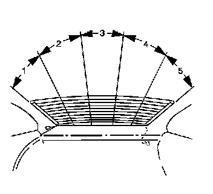
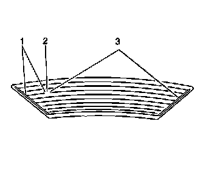

Component Tests and General Diagnostics
DEFOGGER GRID LINES DIAGNOSIS
This test is for reference only. A grid line fault requires the rear window replacement.
1. Start the engine.
2. Activate the rear window defogger system.
3. Connect a test lamp to a good ground.

4. IMPORTANT: The test lamp brilliance will decrease proportionately to the increased resistance in the grid line as the probe is moved from the battery positive bus wire to the ground bus wire. The test lamp brilliance may vary from one window to another.
Move the test lamp probe from zone 5 to zone 1 along each grid line.
- If the test lamp shows full brilliance at both ends of the grid lines, inspect for an open or poor connection in the ground circuit of the rear window defogger grid.

- If the test lamp goes out, test the grid line in at least 2 places (1, 3) to eliminate the possibility of bridging the open (2) in the grid line.